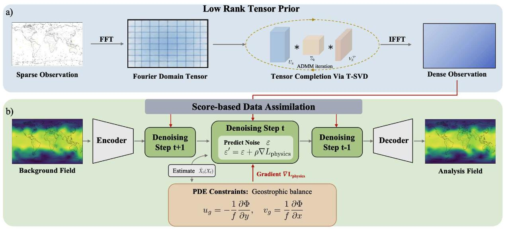
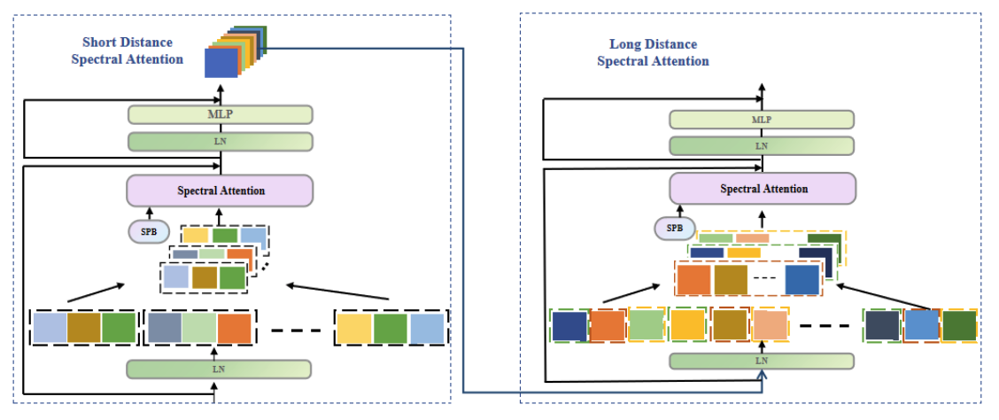
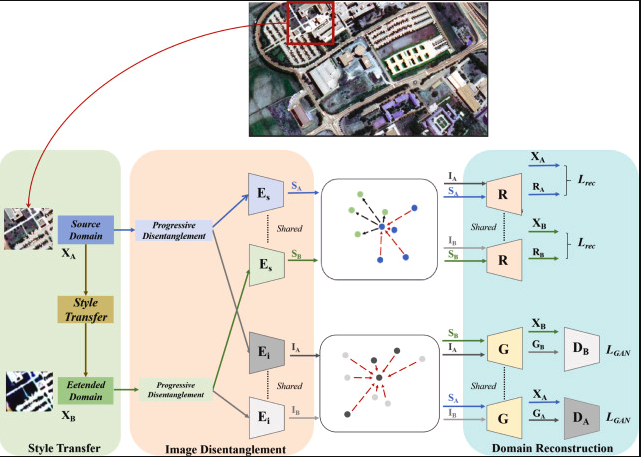

🤔 About Me
I am Danyang Peng, currently a Ph.D. student at Nanjing University, School of Intelligence Science and Technology. Under the supervision of Prof. Xiaotong Yuan, I am committed to advancing AI for meteorology.
My research interests include meteorological downscaling, data assimilation, weather forecasting, foundation models for weather, and remote sensing image processing.
🔥 News
- 2026: 🎉🎉 Our paper LoPhyDA is accepted by ICML 2026!
- 2026: 🎉🎉 Our paper Learning to Refine is accepted by ICML 2026!
📝 Publications

LoPhyDA: Low-Rank Tensor and Physics Gradient Guided Diffusion for Atmospheric Data Assimilation
Danyang Peng, Y. Chen, Y. Zhou, et al., X. Yuan
- International Conference on Machine Learning (ICML), 2026.

Robust Hyperspectral Image Classification Using a Multiscale Transformer with Long- and Short-Distance Spatial-Spectral Cross Attention
Danyang Peng, H. Feng, J. Wu, Y. Wen, T. Han, Y. Li, G. Yang, L. Qu
- IEEE Transactions on Geoscience and Remote Sensing 62, 1-14, 2024.

Disentanglement-Inspired Single-Source Domain-Generalization Network for Cross-Scene Hyperspectral Image Classification
Danyang Peng, J. Wu, T. Han, Y. Li, Y. Wen, G. Yang, L. Qu
- Knowledge-Based Systems 303, 112413, 2024.
Learning to Refine: Spectral-Decoupled Iterative Refinement Framework for Precipitation Nowcasting
Y. Zhou, C. Zhao, D. Peng, et al., X. Yuan
- International Conference on Machine Learning (ICML), 2026.
A Mamba-Advanced Unsupervised Cross-Modality Medical Image Segmentation via Domain Adaptation and Task Decomposition
H. Feng, D. Peng, J. Wu, Y. Zhang, F. Kou, Y. Li, G. Zhao, X. Li, L. Qu
- Knowledge-Based Systems, 114130.
📖 Educations
- Present, Ph.D. student, Nanjing University, School of Intelligence Science and Technology.
- Previous, M.S. in Electronic Information, Anhui University.
- Previous, B.S. in Automation, Xi'an University of Technology.
💻 Internships
- To be updated, research and industry experience.